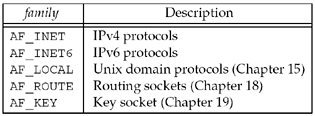
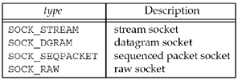
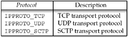
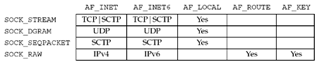

4.2 socket Function
To perform network I/O, the first thing a process must do is call the socket function, specifying the type of communication protocol desired (TCP using IPv4, UDP using IPv6, Unix domain stream protocol, etc.).
#include <sys/socket.h> | int socket (int family, int type, int protocol); | Returns: non-negative descriptor if OK, -1 on error |
family specifies the protocol family and is one of the constants shown in Figure 4.2. This argument is often referred to as domain instead of family. The socket type is one of the constants shown in Figure 4.3. The protocol argument to the socket function should be set to the specific protocol type found in Figure 4.4, or 0 to select the system's default for the given combination of family and type.



Not all combinations of socket family and type are valid. Figure 4.5 shows the valid combinations, along with the actual protocols that are valid for each pair. The boxes marked "Yes" are valid but do not have handy acronyms. The blank boxes are not supported.

You may also encounter the corresponding PF_xxx constant as the first argument to socket. We will say more about this at the end of this section. We note that you may encounter AF_UNIX (the historical Unix name) instead of AF_LOCAL (the POSIX name), and we will say more about this in Chapter 15. There are other values for the family and type arguments. For example, 4.4BSD supports both AF_NS (the Xerox NS protocols, often called XNS) and AF_ISO (the OSI protocols). Similarly, the type of SOCK_SEQPACKET, a sequenced-packet socket, is implemented by both the Xerox NS protocols and the OSI protocols, and we will describe its use with SCTP in Section 9.2. But, TCP is a byte stream protocol, and supports only SOCK_STREAM sockets. Linux supports a new socket type, SOCK_PACKET, that provides access to the datalink, similar to BPF and DLPI in Figure 2.1. We will say more about this in Chapter 29. The key socket, AF_KEY, is newer than the others. It provides support for cryptographic security. Similar to the way that a routing socket (AF_ROUTE) is an interface to the kernel's routing table, the key socket is an interface into the kernel's key table. See Chapter 19 for details.
On success, the socket function returns a small non-negative integer value, similar to a file descriptor. We call this a socket descriptor, or a sockfd. To obtain this socket descriptor, all we have specified is a protocol family (IPv4, IPv6, or Unix) and the socket type (stream, datagram, or raw). We have not yet specified either the local protocol address or the foreign protocol address.
AF_xxx Versus PF_xxx
The "AF_" prefix stands for "address family" and the "PF_" prefix stands for "protocol family." Historically, the intent was that a single protocol family might support multiple address families and that the PF_ value was used to create the socket and the AF_ value was used in socket address structures. But in actuality, a protocol family supporting multiple address families has never been supported and the <sys/socket.h> header defines the PF_ value for a given protocol to be equal to the AF_ value for that protocol. While there is no guarantee that this equality between the two will always be true, should anyone change this for existing protocols, lots of existing code would break. To conform to existing coding practice, we use only the AF_ constants in this text, although you may encounter the PF_ value, mainly in calls to socket.
Looking at 137 programs that call socket in the BSD/OS 2.1 release shows 143 calls that specify the AF_ value and only 8 that specify the PF_ value. Historically, the reason for the similar sets of constants with the AF_ and PF_ prefixes goes back to 4.1cBSD [Lanciani 1996] and a version of the socket function that predates the one we are describing (which appeared with 4.2BSD). The 4.1cBSD version of socket took four arguments, one of which was a pointer to a sockproto structure. The first member of this structure was named sp_family and its value was one of the PF_ values. The second member, sp_protocol, was a protocol number, similar to the third argument to socket today. Specifying this structure was the only way to specify the protocol family. Therefore, in this early system, the PF_ values were used as structure tags to specify the protocol family in the sockproto structure, and the AF_ values were used as structure tags to specify the address family in the socket address structures. The sockproto structure is still in 4.4BSD (pp. 626–627 of TCPv2), but is only used internally by the kernel. The original definition had the comment "protocol family" for the sp_family member, but this has been changed to "address family" in the 4.4BSD source code. To confuse this difference between the AF_ and PF_ constants even more, the Berkeley kernel data structure that contains the value that is compared to the first argument to socket (the dom_family member of the domain structure, p. 187 of TCPv2) has the comment that it contains an AF_ value. But, some of the domain structures within the kernel are initialized to the corresponding AF_ value (p. 192 of TCPv2) while others are initialized to the PF_ value (p. 646 of TCPv2 and p. 229 of TCPv3). As another historical note, the 4.2BSD man page for socket, dated July 1983, calls its first argument af and lists the possible values as the AF_ constants. Finally, we note that the POSIX standard specifies that the first argument to socket be a PF_ value, and the AF_ value be used for a socket address structure. But, it then defines only one family value in the addrinfo structure (Section 11.6), intended for use in either a call to socket or in a socket address structure!
|